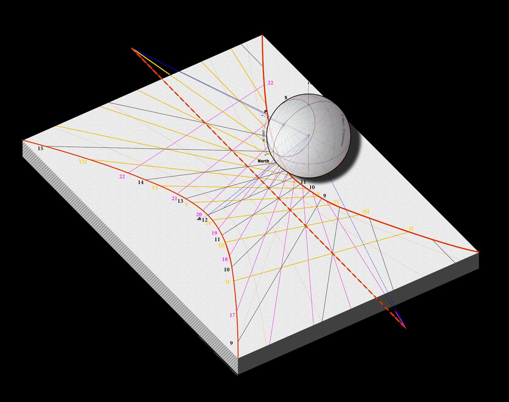
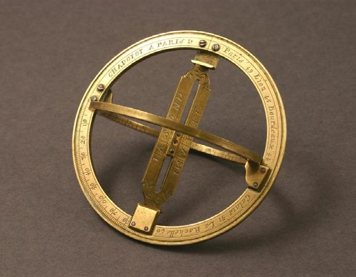
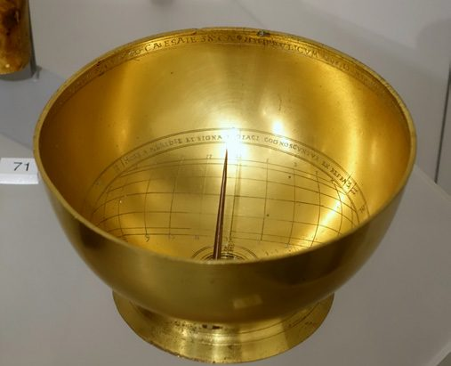
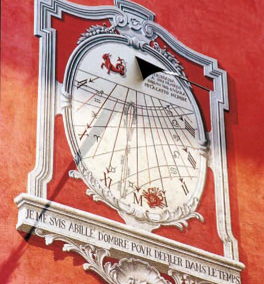

15° = 1 hourThe Sun's 360° in 24 h sets the spacing of the meridians.
Best accuracy≈ 1 minute, if perfectly placed.
ActinobolismusKircher's word for “ray-throwing” — the reflected image, flipped left-for-right and upside down.
Chapter I · 2
From Gnomonic to Catoptric
Every dial face is a projection of the sky. Reverse the drawing, add a mirror, and the Sun can tell the time indoors.
A sundial has two parts: a dial plate carrying hour lines, and a style whose shadow falls across them. The plate can be horizontal, vertical or inclined; its face is nothing more than the projection of the celestial sphere onto a surface. The meridians, 15° apart on the sphere because the Sun travels 360° in 24 hours, land as straight hour lines; the equator projects to the equinoctial line; the tropics to hyperbolic diurnal arcs. Even well made, a dial reads to about a minute at best — penumbra, the equation of time and refraction all work against it.

iA field guide to dials
The thesis walks through the standard typology before arriving at the one that matters here:
- Vertical dial — the common wall dial of houses, churches and monuments.
- Equinoctial ring — a meridian ring with latitude, hour and date scales; tells true solar time anywhere in the world.
- Scaphe (cup) dial — hour lines on a concave hemisphere, the reverse of the celestial sphere; a Babylonian inheritance.
- Cylindrical / altitude dial — reads time from the Sun's height; the shepherd's dial.
- Analemmatic dial — horizontal, with an elliptical ring of hour points and a gnomon that must be moved along the meridian day by day.
- Camera-obscura meridian line — an indoor calendar that works only at local noon, giving the date rather than the hour.
- Reflecting (catoptric) dial — the hour pattern reversed, drawn for a spot of light thrown by a small mirror.


iiTurning the dial inside out
The catoptric dial obeys the law of reflection. A small mirror on a window sill sends a ray indoors; as the Sun moves, the bright spot travels across the ceiling and walls, and the hour lines are drawn mirror-reversed to suit it. Kircher described the reflecting dial in Ars Magna Lucis et Umbrae and coined Actinobolismus, “ray-throwing”, for the effect. Once scholars saw that dials could be built for rooms the Sun never reaches directly — inner chambers, gallery vaults, domes — the reflected dial became its own branch of gnomonics.

The list of known reflected ceiling dials is short; they were mathematical enough to be built for delight, elegance or display rather than daily use. Bonfa's Grenoble stair is the most cited of them. A near-twin survives 40 km west at Saint-Antoine-en-Vienne: 27 steps, about 25 m², black / red / yellow lines for normal, Italic and Babylonian hours — the same colour scheme as Grenoble, which raises the unresolved question of whether Bonfa made both.